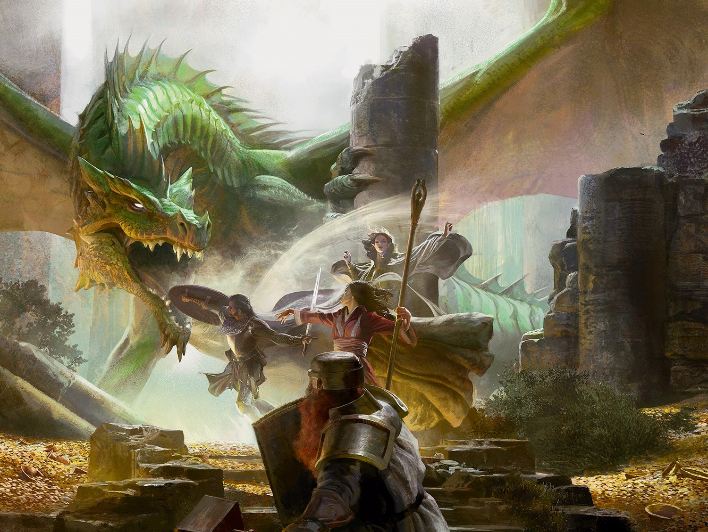

Dungeons & Dragons — одна из самых известных и популярных настольных ролевых игр в мире, которая продолжает расти, в то время когда миллионы игроков во всем мире получают увлекательный и разнообразный игровой опыт.
D&D предоставляет игрокам свободу в интеллектуальных решениях и развитии своих персонажей.
Решения, принимаемые игроками, могут определять дальнейший ход событий, поэтому стратегия и взаимодействие с другими игроками играют ключевую роль.
В ходе игры игроки используют ресурсы для определения успеха своих действий. У каждого персонажа есть характеристики, определяющие его способности, такие как сила, ловкость, интеллект и т. д. Игроки также могут использовать навыки и заклинания, чтобы преодолевать препятствия.
В основе игры лежит механика бросков кубиков, определяющих исход различных ситуаций и действий персонажей. Задача игроков - решать задачи, решать головоломки, общаться с монстрами и познавать мир.
В игре также используется набор правил, который помогает установить порядок действий и разрешить спорные ситуации.